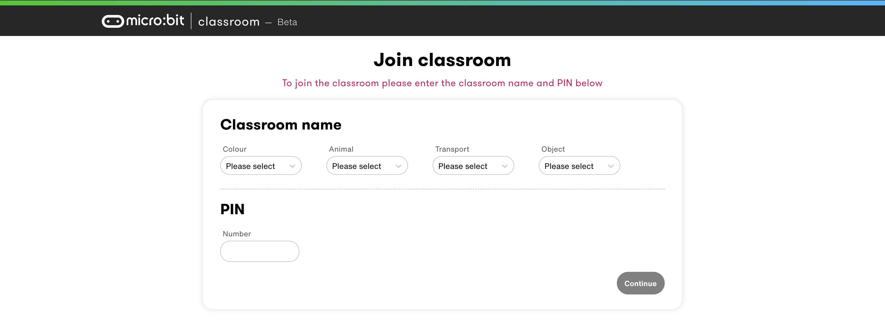
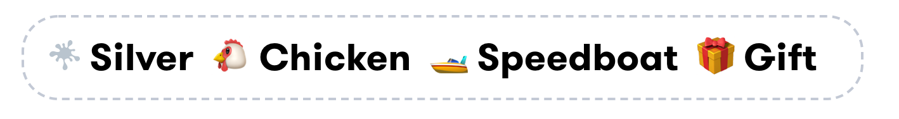
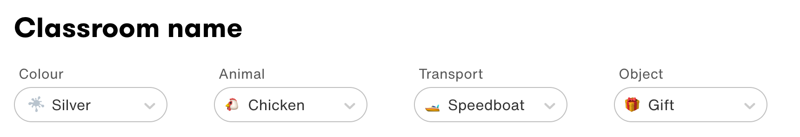
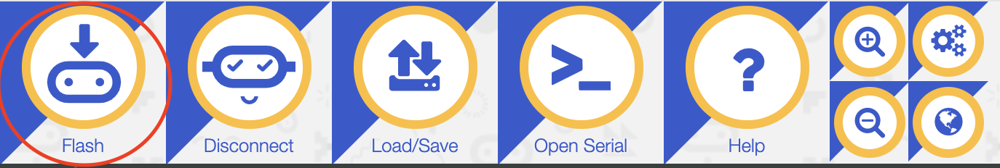
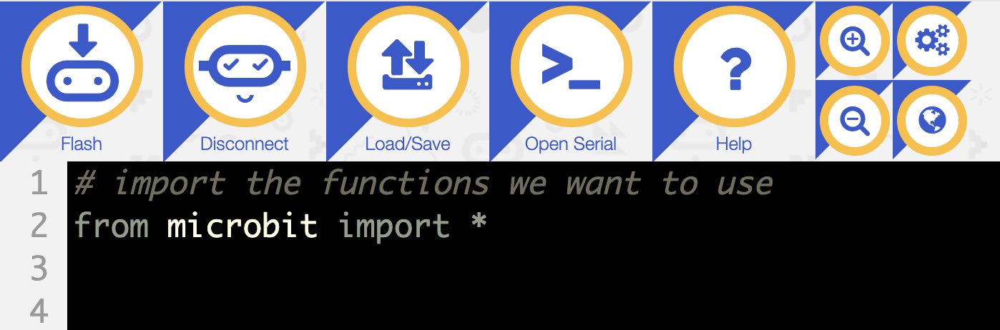
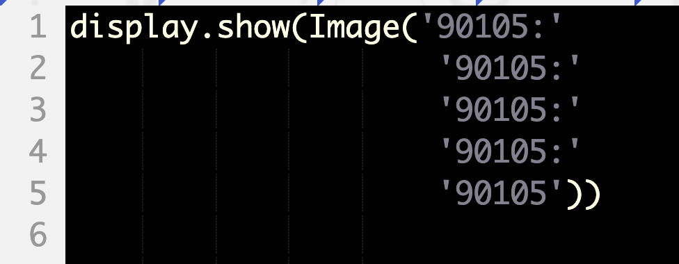
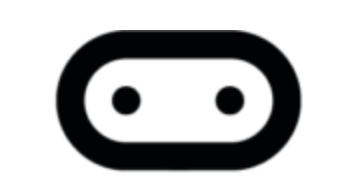

In today's class, we'll learn how to use Python to control our micro:bits. This is super awesome because it lets us do a few things:
- Learn basic Python.
- Practice the algorithmic thinking we used in Scratch by applying it to a different language.
- Explore more possibilities of the micro:bit.
Steps to access the CodeIt micro:bit Python classroom:
- Open the micro:bit classroom website here. You should arrive at a page that looks like:
 - Select our classroom name elements from the list. Our classroom name is
 - The "Classroom Name" section on your website should look like the image below.
 - Enter the classroom PIN in the "PIN" section. Our PIN is 538143.
- Move onto the next page by pressing "Continue" and enter your name.
Set up your Python editor
- Press the "connect" tab and choose your micro:bit to connect it to the Python editor. You must be connected to the computer using a USB cord.

- Flash the code onto your micro:bit to connect it. Do this by pressing the "flash" tab in the top left. This will only show up if your micro:bit is connected to the editor (from the step above).
 - Now, you should be ready to code!
Remember how we had to import the micro:bit extension in Scratch in order to control it in our program? We have to do something similar in Python. At the top of every program that works with the micro:bit, you must include this line:
from microbit import *.
Let's dissect what each part of this line means. In general, in Python, import tells the script to add a package; this is comparable to adding an extension in Scratch. Sometimes we use the line import [package], but in this case, we're using from [package] import. This is because we want to specify what we want to import from the package. In Python, using the asterisk in the import line, *, means "all." So what we're telling the program with from microbit import *, we're really saying, "take the microbit package and add all of its functions to my code."
We can now move onto the fun codelabs! Here are a few things to note before we dive in:
- Update your code/download it to your micro:bit by pressing the "Flash" tab in the upper-left-hand corner.
- Python is sensitive to leading white space. This means that if you want to add code within a loop or a conditional statement, you must indent it once further than the declaration of the loop or conditional statement.
- You can add comments in Python to explain what a piece of code is doing or to make notes for yourself. You can do this by adding a pound sign
#in front of a line of code.
 - Check your micro:bit LEDs after flashing a piece of code to check for errors. It will flash words like "NameError" or "SyntaxError" if you have problems in your code. This means that you have some issue with what you've written. Try to find it and fix it, but if you're having trouble, ask your mentor.
- In Python, to create a variable, all you need to do is choose some name and then set it equal to a value (can be a number, a string/text surrounded by "" or '', or a function). For example if I wanted to keep track of the score, I could begin the program with
score = 0and then increase it later in the program withscore += 1. This would add one point to the score.
The functions you can use in Python with the micro:bit
You can go to this website, the micro:bit Micropython API, to find a list of functions that you can use and a description of what it does and examples of how to use them. On the side bar, you can click on which part of the micro:bit you want to operate and under "Functions," you'll find a webpage with all of the functions/actions that part can use.
Have fun!
Start with the Clapping Lights project with your breakout room. Afterwards, choose any of the other projects that sound interesting by pressing the slide from the list on the left side of this website.
Goal of this lab
Turn on all of the LEDs/some image on the LEDs when you clap once. The next time you clap, the lights should turn off.
Relevant functions
You will likely want to use the following functions in your code:
display.show()- this tells the LEDs to make a shape.Image()- this tells the LEDs what shape to make. You control the brightness by the number in each spot (0 is off, 9 is the brightest). You must add 5 strings to specify the image, each one ending with a colon:.display.clear()- turn all of the LEDs in the display off.microphone.was_event()- listen to hear if the microphone detected a noise.SoundEvent.LOUD- the microphone heard a LOUD sound.
Useful example
This image shows how to display three vertical lines on the micro:bit, where the first and third are brightest and the middle is at half-brightness.
Tips
- Like in Scratch, Python only runs the code once unless otherwise specified. We used the forever loop a lot in Python. We can create the same "forever" loop in Python with the line
while True:, which means that it will execute as long asTrueis true, which is always. - Consider both the cases when the microphone hears a loud noise and when it doesn't.
Add your own spin to it
You can make this project your own by customizing different elements of the program. For example, you can change:
- What the LEDs display once there's a clap.
- Display different shapes during the on and off periods (instead of just turing the lights on and off completely).
- Require two claps to change the light status.
Goal of this lab
Introduce yourself with the micro:bit. Have it flash your name.
Relevant functions
You will likely want to use the following functions in your code:
display.scroll()- this tells the LEDs write something in scrolling letters. This takes a string, or text that is surrounded by quotation marks.display.clear()- turn off all of the LEDs.sleep(int)- stop the micro:bit function for int amount of time (intshould be a number) in milliseconds. 1000 milliseconds = 1 second.
Add your own spin to it
You can make this project your own by customizing different elements of the program. For example, you can change:
- Choose to write a message other than your name.
- Display your name only after pressing a button. Try doing a specific button. You can also try to display it when pressing either button A OR B.
Goal of this lab
Flash a happy face on the display 5 times when the A button is pressed. Flash a sad face on the display when the B button is pressed.
Relevant functions
You will likely want to use the following functions in your code:
display.show()- this tells the LEDs to make a shape.Image.HAPPY- tells the LEDs to show a smiley face.Image.SAD- tells the LEDs to show a sade face.display.clear()- turn all of the LEDs in the display off.button_a.is_pressed()andbutton_b.is_pressed()- detect whether button A or B (respectively) have been pressed.sleep(int)- stop the micro:bit function for int amount of time (intshould be a number) in milliseconds. 1000 milliseconds = 1 second.
Add your own spin to it
You can make this project your own by customizing different elements of the program. For example, you can change:
- Choose to display something other than the happy and sad faces.
Image()might be a useful function for this. - Flash quicker.
- Flash more than 5 times.
Goal of this lab
Have the micro:bit track how many steps you take. Create a steps variable and add to it every time a step was taken. Display the current steps.
Relevant functions
You will likely want to use the following functions in your code:
display.show()- this tells the LEDs to make a shape.accelerometer.was_gesture('shake')- check if the micro:bit was shaken.
Add your own spin to it
You can make this project your own by customizing different elements of the program. For example, you can change:
- Allow the user to reset the step counter.
- Show some kind of symbol for every 10 steps taken.
Goal of this lab
Create a stopwatch with your micro:bit. Start the timer when you touch the pin logo and stop it once it's pressed once more. After the clock is stopped, display how long it ran with scrolling text on the LEDs.
Relevant functions
You will likely want to use the following functions in your code:
display.scroll()- this tells the LEDs write something in scrolling letters. This takes a string, or text that is surrounded by quotation marks.pin_logo.is_touched()- detects if the pin logo on the micro:bit was touched. ReturnsTrueif it was.running_time()- reports how long the micro:bit has been running at the instant that it is called. In milliseconds.
Tips
- Not all of the functions that you'll need are shown above. Use some of the functions from previous projects (other tabs) to complete your project.
running_time()does not change automatically. To check how much it has been updated, it needs to be called again.running_time()is in milliseconds. To get the time in seconds, divide by 1000.
Add your own spin to it
You can make this project your own by customizing different elements of the program. For example, you can change:
- Start the timer by pressing one button and stop the timer by pressing another. Show the time it ran for by pressing the pin logo.
- Display something on the LEDs while the timer is running to indicate that it is.
Goal of this lab
Display the current temperature that the micro:bit is sensing with the LEDs.
Relevant functions
You will likely want to use the following function in your code:
temperature()- returns the current temperature, in Celsius.
Tips
- Not all of the functions that you'll need are shown above. Use some of the functions from previous projects (other tabs) to complete your project.
- Check if the temperature changes reliably by putting the micro:bit in front of a fan or near a hot place.
Add your own spin to it
You can make this project your own by customizing different elements of the program. For example, you can change:
- Keep track of the highest and lowest temperatures you've seen so far. Display the lowest when the A button is pressed and the highest when the B button is pressed.
- Change the temperature to Fahrenheit. Look up the conversion online.
Goal of this lab
Turn on all of the LEDs when the micro:bit is in a dark room. Turn off all of the LEDs when the room is bright again.
Relevant functions
You will likely want to use the following function in your code:
display.read_light_level()- returns the light exposure it detects; the lower the number, the darker the room.
Tips
- Not all of the functions that you'll need are shown above. Use some of the functions from previous projects (other tabs) to complete your project.
- Try using 100 as a baseline light level for a dark room, but this might need to be changed depending on where you are.
Add your own spin to it
You can make this project your own by customizing different elements of the program. For example, you can change:
- Display something other than turning all of the LEDs on as bright as possible. Maybe a moon or flashing all the lights?
Goal of this lab
Use the compass element of the micro:bit to display the direction that it is pointed towards on the LEDs.
Relevant functions
You will likely want to use the following function in your code:
compass.calibrate()- calibrates/tunes the internal compass of the micro:bit to make sure the readings are accurate.compass.heading()- returns the degree that the micro:bit is pointed toward. There are 360 degrees total.
Tips
- Not all of the functions that you'll need are shown above. Use some of the functions from previous projects (other tabs) to complete your project.
- Use the following degree ranges to correlate to directions (assume that x is the reading from the compass):
- North: x < 45 or x > 315
- East: 45 < x < 135
- South: 135 < x < 225
- West: 225 < x < 315
Add your own spin to it
You can make this project your own by customizing different elements of the program. For example, you can change:
- Add more specific directions, such as NE, SE, SW, NW, according to the degrees in the image of the compass above. Determine the new ranges you need.
- Add symbols to represent directions.
Goal of this lab
Display how loud the noise around the micro:bit is with a bar on the LEDs. If the sound is the loudest it could possibly be, all of the LEDs should be lit up. If it is in the mid-range of noise, then the bottom three horizontal lines of lights should be on. If it is dead silent, none of the LEDs should be on.
Relevant functions
You will likely want to use the following function in your code:
microphone.sound_level()- returns a number representing how loud the current sound is. 0 is dead silent, 255 is the loudest possible reading.Image()- tell the LEDs what to display with 5 strings of numbers, each ending with a colon:.
Tips
- Not all of the functions that you'll need are shown above. Use some of the functions from previous projects (other tabs) to complete your project.
- You will want to create 5 possible images to use:
- One for the quietest sound level, no sound. No LEDs should be on.
- One for the second quietest sound level. The bottom 5 LEDs should be on.
- One for each of the increments of noise increasing from the one above. Each increment should turn on one line of LEDs.
- The loudest sound increment should have all of the LEDs on.
- (It is recommended to do this with your breakout room) Because we can only display 5 lines of LEDs, not 256, you should make a separate function to correlate the sound level to the correct interval. You can scale the sound with the following algorithm:
- Determine how many possibilities there are for sound levels read by the
microphone.sound_level(). Store this in some variable. - Determine how many graph possibilities there are (how many configurations you want there to be with displaying the LEDs). Store this in a different variable.
- Take the current reading and scale it. This is done by subtracting the minimum sound reading possible from this reading. Then divide by all of the possible values that the microphone could have read in (value from step 1).
- Multiply this scaled value from step 3 by the whole range we want it to be on (number from step 2). Add this to the minimum number of rows of LEDs we want lit.
- This process will give you how many rows of LEDs should be lit.
- Determine how many possibilities there are for sound levels read by the
- You can make a list of all of the graphs by setting the
Image()configurations to variables, such asgraph0,graph1, etc. and setting them all as follows:
all_graphs = [graph0, graph1, graph2, graph3, graph4, graph5].
Add your own spin to it
You can make this project your own by customizing different elements of the program. For example, you can change:
- Try to make the sound-o-meter a horizontal graph rather than a vertical graph.
- Add smaller increments and instead of using straight lines, expand a few LEDs at a time from the corner or center. This would be like a "growing circle" or something similar.
Goal of this lab
Have your micro:bit act as a metronome to help you practice your music. It should make a sound once a measure at whatever tempo you want.
Relevant functions
You will likely want to use the following function in your code:
music.set_tempo(bpm=int)- defines the music class with a certain BPM (beats per minute) at the desired tempo (int).music.play([])- have the micro:bit make noise at a certain pitch for a given duration. For example, to play the note C for one beat and then to rest for 3, this function would bemusic.play(["C4:1", "r:3"])where "C4" is the note "C" and it plays for one beat (":1"), and "r" means rest for 3 beats (":3").
Tips
- Not all of the functions that you'll need are shown above. Use some of the functions from previous projects (other tabs) to complete your project.
- You will need to import the music package. You can do this by including this line at the top of your code:
import music.
Add your own spin to it
You can make this project your own by customizing different elements of the program. For example, you can change:
- Have the metronome tick for more than one beat per measure.
- Allow someone with the micro:bit to change the tempo. Make sure that your tempo is a variable.
- Display the current tempo with the LEDs.
Goal of this lab
Create your own little micro:bit pet. Have your micro:bit smile when you give it attention (by touching the pin logo). It should giggle when you shake the micro:bit. It should be sad if you don't play with it for 10 seconds. It should get tired and yawn if you don't play for 15 seconds. It should die if you don't play with it for 20 seconds. It should wake back up and smile if you touch it again!
Relevant functions
You will likely want to use the following function in your code:
display.show()- makes the LEDs turn on in the configuration you add.
Image.HAPPY- turn the LEDs on to a smiley face.Image.SAD- turn the LEDs on to a sad face.Image.SURPRISED- turn the LEDs on to a surprised face.Image.ASLEEP- turn the LEDs on to a sleeping face.Image.SKULL- turn the LEDs on to a skull.
accelerometer.was_gesture('shake')- detects if the micro:bit was shaken.audio.play()- make the given noise.
Sound.HAPPY- make a noise showing that the micro:bit pet is happy.Sound.GIGGLE- make a noise showing that the micro:bit pet is giggling.Sound.SAD- make a noise showing that the micro:bit pet is upset.Sound.YAWN- make a noise showing that the micro:bit pet is tired.Sound.MYSTERIOUS- make a scary noise to show that the micro:bit pet died.
Tips
- Not all of the functions that you'll need are shown above. Use some of the functions from previous projects (other tabs) to complete your project.
- You will need to import the audio package to make noise. You can do this by including this line at the top of your code:
import audio. - Make sure to keep track of time, either with
running_time()orsleep(int)andtimer += int.
Add your own spin to it
You can make this project your own by customizing different elements of the program. For example, you can change:
- Mess around with other possibilities for how to play with your pet.
- Explore what other sounds exist in the audio.Sound library.
- Try adding different gestures to the code.